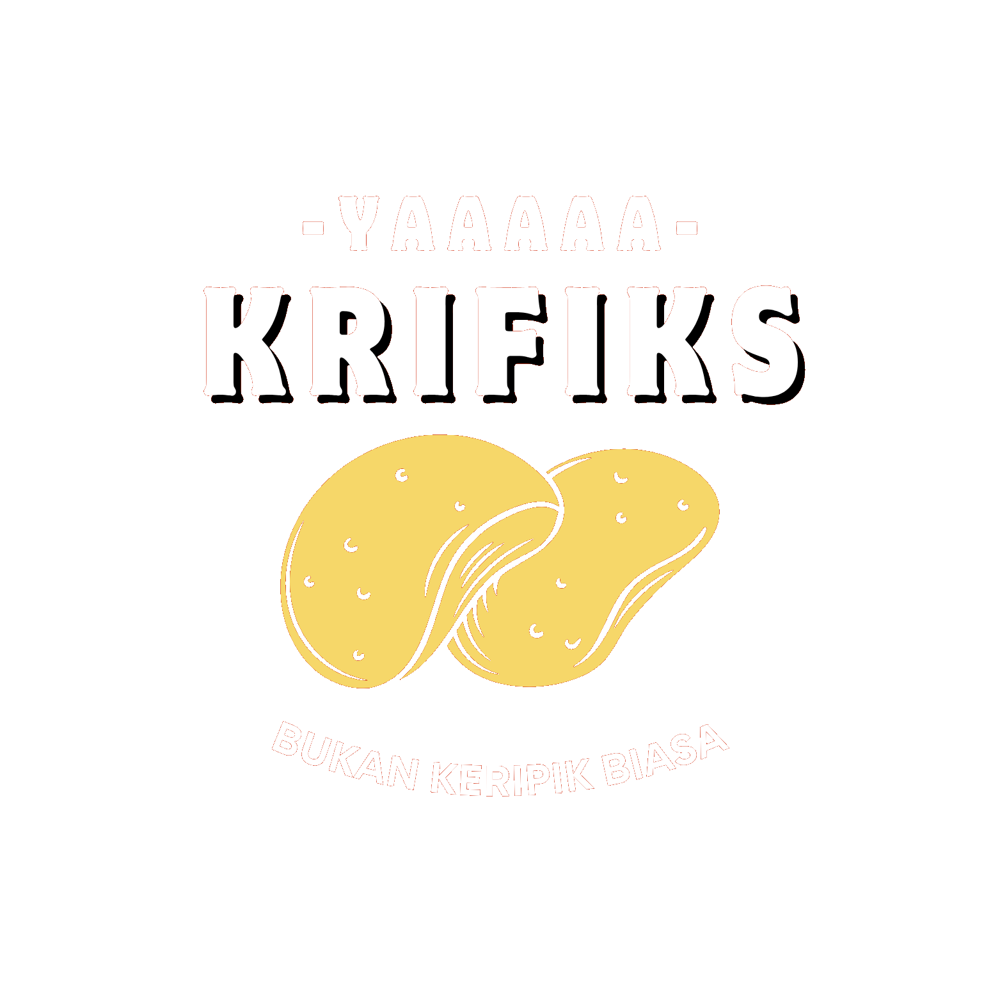

Galeri Krifiks

Lihat
Balado Pedas

Lihat
Jagung Bakar

Lihat
Saus Glaze

Lihat Katalog
Katalog Lengkap

BUKAN KERIPIK BIASA
Camilan premium dari bahan baku lokal Tebing Tinggi yang diolah dengan rasa kekinian, pas buat Gen-Z!
Cobain SekarangPilih varian favoritmu, dijamin nagih!
Tekstur super renyah dengan cita rasa gurih yang jadi kanvas sempurna.
Tekstur unik, sedikit padat namun rapuh, dengan manis alami sukun.
Manis legit pisang pilihan berpadu harmonis dengan bumbu gurih.
Balado, Jagung Bakar, dan Original dengan Saus Glaze (Matcha, Tiramisu).
Dari petani asli Tebing Tinggi
Saus glaze yang unik & nagih
Teknik goreng modern
Aman, Sehat & Halal
Apa kata sobat Krifiks?
"Gila sih glaze Tiramisu-nya, kirain bakal aneh taunya enak banget! Renyahnya dapet."
"Oleh-oleh wajib kalau ke Tebing Tinggi. Baladonya pedesnya pas, nggak bikin batuk."
"Kemasan premium banget, cocok buat kado atau snack rapat kantor."
Lihat
Balado Pedas
Lihat
Jagung Bakar
Lihat
Saus Glaze
Lihat Katalog
Katalog Lengkap
Tentu saja! Semua bahan baku Krifiks dijamin halal dan diproses secara higienis tanpa bahan-bahan non-halal.
Dengan kemasan ziplock premium kami, Krifiks bisa tahan renyah hingga 3-4 bulan jika belum dibuka, dan 1 minggu setelah dibuka (asal ditutup rapat lagi ya!).
Bisa banget! Kami melayani pengiriman ke seluruh Indonesia dengan packing aman (bubble wrap).
Langsung kepoin dan pesan KRIFIKS sekarang. Jangan sampai kehabisan stok hari ini!